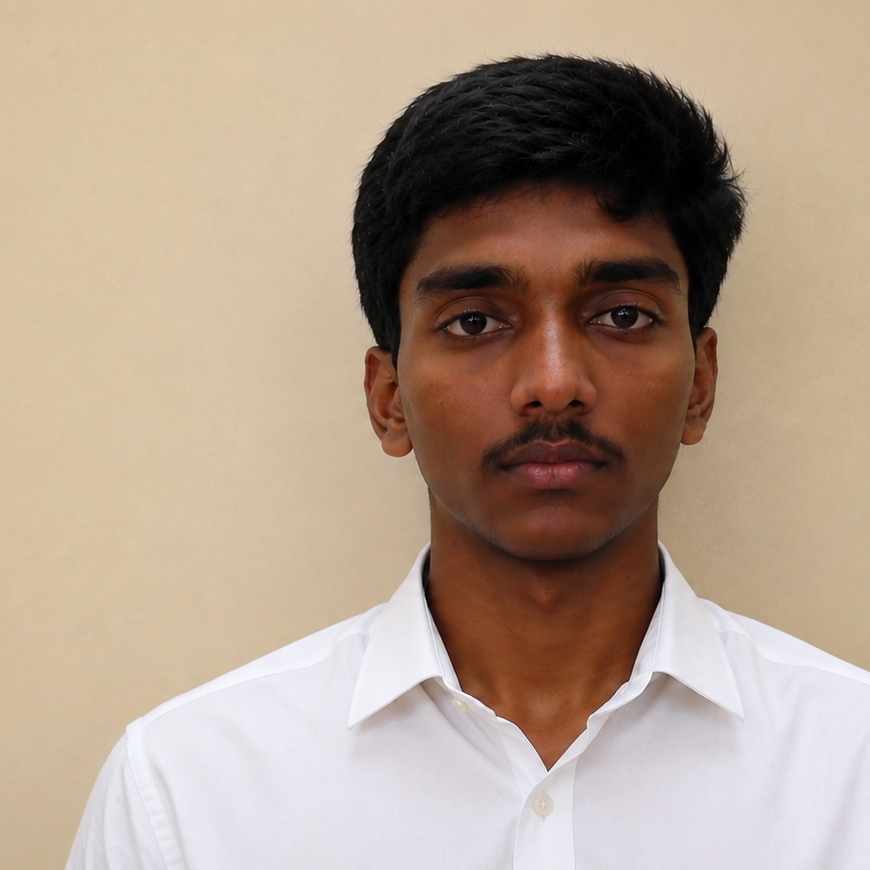

I build software the way I'd want to use it — carefully taken apart, understood, and put back together cleaner. Currently finishing a degree in Artificial Intelligence and looking for the room to do that professionally.

I'm a final-year B.Tech Artificial Intelligence student, working across programming, data structures, algorithms, and web technologies. I like taking systems apart to see how they actually work, then rebuilding them cleaner — that's shown up in a multi-agent code review tool and a handwriting-based stress detector.
I'm looking for a Software Engineer or Graduate Trainee role where I can bring that instinct to real, production software, and keep growing as a developer alongside people who care about the craft.
Real-time Indian Sign Language translation using a pose and facial-expression fusion transformer as a frozen base model, plus a lightweight few-shot adapter (BridgeAdapter) that personalizes to a new signer's style from a short calibration clip — without retraining the base model.
In progress — base model + adapter architecture built, training/eval ongoingMost ISL translation models are trained on one signer's style and degrade badly on anyone else's. Retraining per signer isn't practical.
Freeze a pose + facial-expression fusion transformer as the base model, then learn a small adapter per signer from ~5 minutes of calibration video — keeping the adapter under 2% of the base model's parameters.
Developed interactive and responsive webpages using HTML, CSS, and JavaScript; improved UI/UX with structured layout and accessible design.
Led a 4-member team, advanced to the second round with a Smart Agriculture solution, before being eliminated.
Prior: Higher Secondary (2023) and Secondary (2021), Akshaya Academy Higher Secondary School — both 80%+.